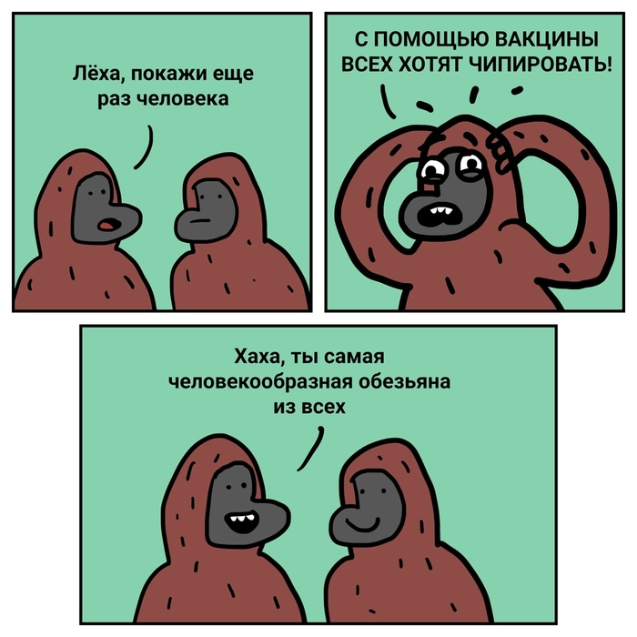
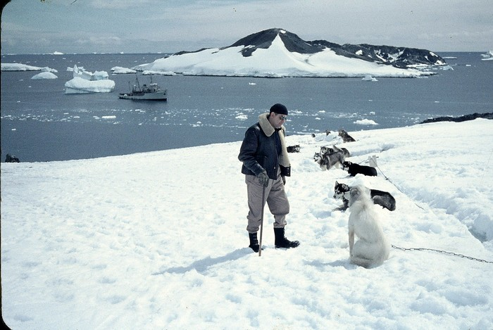

Правительство США выделило коронавирус SARS-CoV в 2003 году
Патент на обнаружение и выделение коронавируса SARS-CoV принадлежит правительству США, 19 марта сообщает корреспондент ИА Красная Весна.
В документе говорится, что заявка на патент относительно коронавируса SARS-CoV была подана 25 апреля 2003 года.
Патент содержит сведения о «вновь выделенном человеческом коронавирусе (SARS-CoV), возбудителе тяжелого острого респираторного синдрома (SARS).Также предоставлены последовательность нуклеиновой кислоты генома SARS-CoV и аминокислотные последовательности открытых рамок считывания SARS-CoV, и способы использования этих молекул для обнаружения SARS-CoV и выявления инфекций с их помощью», — сообщается в документе.
Изобретение было сделано Министерством здравоохранения и социальных служб США.Следующие записи относительно этого документа датированы 2004 и 2007 годом.
Изобретение относится к способам обнаружения коронавируса, ассоциированного с тяжелым острым респираторным синдромом.В документе уточняется, что речь идет о сферических коронавирусах, диаметр которых составляет 100–160 нм.
Размер коронавируса SARS-CoV коррелирует с размером вируса на недавно опубликованной сотрудниками лаборатории новосибирского Государственного научного центра вирусологии и биотехнологии «Вектор» фотографией коронавируса SARS-Cov-2 (COVID-19), его диаметр составляет приблизительно 100 нм.
Далее в документе приводится подробное описание коронавируса SARS-CoV и его генома, а также методов его обнаружения.
Напомним, полный геном коронавируса SARS-Cov-2 был опубликован в базе Университета Калифорнии в Санта-Крузе 29 января 2020 года.
Согласно мнению авторов публикации в журнале Nature, геномные последовательности обоих вирусов, вызывающих пневмонию в тяжелой форме и относящихся к одному семейству: SARS-Cov и SARS-Соv2, достаточно близки.
Отметим, бывший эксперт ООН по бактериологическому оружию Игорь Никулин заявил, что коронавирус был разработан в США в 2015 году (интервью на Пикабу).
В журнале Nature в 2015 году вышла статья об успешном эксперименте американских ученых по модификации коронавируса китайской летучей мыши, когда в его геномную последовательность был введен ген белка, связывающегося с человеческим белком.В результате модификации вирус получил возможность напрямую проникать в клетки человека.Журнал Nature опубликовал отдельные разъяснения по этому поводу.
Гугл-транслейт описания:
ФИГ.2А-в - это электронные микрографы, иллюстрирующие ультраструктурные характеристики коронавируса, ассоциированного с атипичной пневмонией (атипичная пневмония-ков).ФИГ.2А представляет собой тонкослойный электронно-микроскопический вид вирусных нуклеокапсидов, выровненных вдоль мембраны грубого эндоплазматического ретикулума (стрелка) в виде частиц, зародившихся в цистернах.Окутанные вирионы имеют поверхностные выступы (наконечник стрелы) и электронно-светящийся центр.Непосредственно под вирусной оболочкой лежит характерное кольцо, образованное спиральным нуклеокапсидом, часто видимым в поперечном сечении.ФИГ.2B представляет собой отрицательное пятно (метиламин вольфрамат) электронно-микроскопическое изображение, показывающее пронизанную пятнами частицу коронавируса с типичной внутренней спиральной нуклеокапсид-подобной структурой и клубообразными поверхностными выступами, окружающими периферию частицы.Стержни: 100 Нм.
Там ещё картинки поврежденных альвеол, но они чёрно-белые и непонятные.
Posted On: 2020-03-23T12:15:29






Content Date: 2020-03-23
Download Date: 2021-03-17
Document ID: L0C0498EP